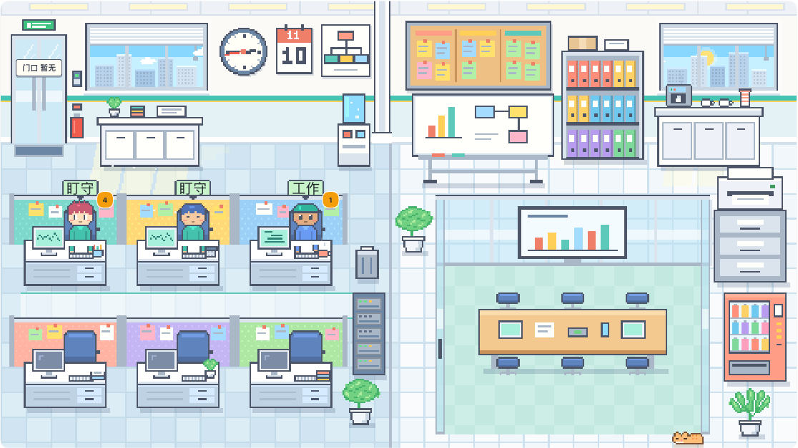
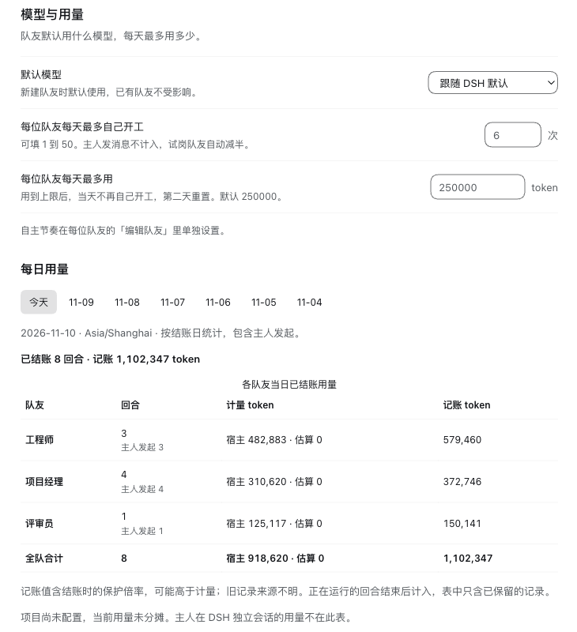
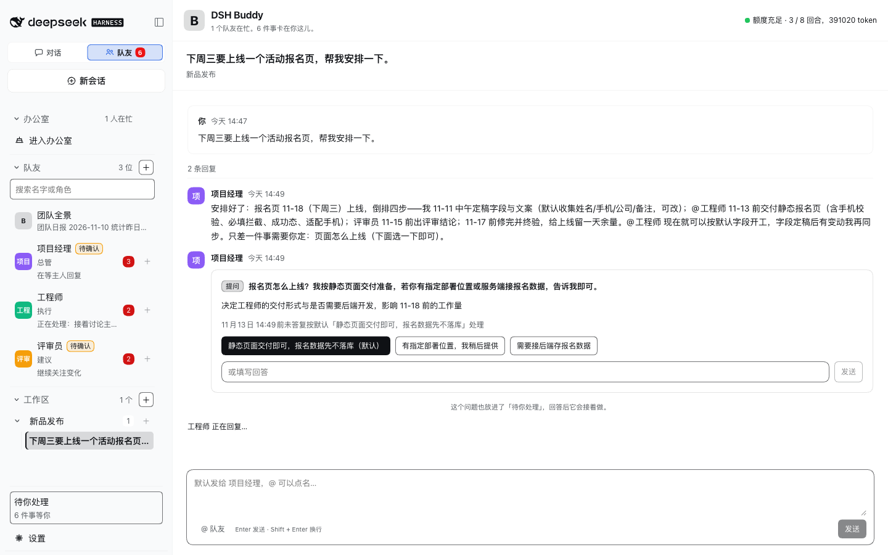

DeepSeek Harness 桌面版插件，给一个人的公司（OPC）
你的 OPC 专业团队
一支看得见、管得住的 AI 团队。
在 DSH 里招几位 AI 队友。交代一句，负责人安排分工，队友互相 @ 着讨论。谁在忙、谁在等你，办公室里一眼看到；谁可以自己开工、一天最多自己花多少，都由你定。
安装：复制包名，粘贴到 DSH 的插件页
@tyr1105/dsh-buddy
DSH → 插件 → 添加插件 → 粘贴包名。重新打开 DSH 后，在左栏顶部切到「队友」。
- 插件免费，MIT 开源
- 用你 DSH 里现成的模型和额度
- 队友的文件和记录存在你自己的电脑上
- 需要 macOS 和 DSH 桌面版 0.2.x
看得见：插件里的办公室
队友在做什么，小人就在做什么。点一位，能看到它今天每段时间做了什么；整间办公室还能倒回今天的任意时刻。

- 工作
正在处理手上的事。 - 盯守
手上没活，等着变化或等你点名。这时候不花额度。 - 桌边的数字
它有几件事在等你处理。 - 空工位
办公室一共六个工位，同时在岗最多 6 位。 - 挂钟和窗外
走的是真实时间，天色跟着变。 - 角落的猫
不归任何人管。
截图来自一次真实试用：三位队友正在用真实模型做一个活动报名页。
管得住：谁开工、花多少，都由你定
几位队友一起跑，最怕额度不知不觉用完。队友自己开工的那部分，这里都有开关和上限。
不点名，不开工
每位队友有一档自主节奏：听吩咐、提建议、主动做、全力推进。现成的角色大多默认「听吩咐」，你不点名，它不动，也不花额度。
花多少，有上限
队友每天最多自己开工几次、用多少 token，设置里能改，用了多少有一张表。讨论也封顶：你每说一句，队友最多接着说 8 次，最后一次留给负责人收尾。它们不会背着你聊一下午。
要紧的动作，先问你
往外发东西、改自己文件夹以外的文件、运行没见过的命令，都要你点批准。一次批准只管这一个动作。提问和审批集中放在「待你处理」。

交代一句，后面是这样接上的
项目里一条会话聊一件事。你对负责人说话，剩下的在同一条会话里发生。
- 新开会话，说要做什么不用拆任务，不用指定谁来做。
- 负责人接下，点名分工它知道项目里有谁、各自擅长什么。
- 队友互相 @，你随时插话谁被点名谁接着说，所有人看的是同一条会话。
- 要你定的事，单独来找你提问和审批会变成卡片，集中放在「待你处理」。

15 个现成的角色，挑了就能用
名字、性格、说话方式和技能，加进来之后都能改。第一次用，先选带「推荐」的两位：一个做事，一个挑毛病。
产品研发
从想法到交付，每一段都有人管。
- 产品经理把想法写成需求和验收标准。
- 项目经理把大事拆开，派给队友，跟到做完。
- 设计师出页面原型和设计说明。
- 工程师推荐接活、完成，并说明验证方式。
- 评审员推荐专门挑毛病。每条都说清哪里不对。
- 验收员交付前按验收项逐条核对。
推广
让更多人看到产品。
- SEO 专员查关键词，改标题和页面内容。
- 视频策划写推广视频的脚本和分镜。
值守
自己盯着，有事才通知你。
- 研究员代查资料、盯网页。结论附出处。
- 巡检员盯日志和定时任务，异常时通知。
外脑
平时不说话，点名才来。
- 追问者连续追问，把含糊的地方问穿。
- 鬼点子很多专出不按常理的点子。
- 员工教练看队友做得怎么样，给改进建议。
对外
往外发之前，都要你批准。
- 发言人写公告、发版说明和对用户的回复。
- 市场专员看竞品和用户，定卖点和推广计划。
也可以从头配一位自己的队友：名字、执行风格、性格和说话风格、MBTI、自主节奏、模型、岗位技能、员工说明，一页填完。
三步开始
-
装上
在 DSH 的插件页点「添加插件」，粘贴包名。装完重新打开 DSH，在左栏顶部切到「队友」。
@tyr1105/dsh-buddy -
挑两位队友
点「新建队友」，在模板库里选上工程师和评审员，点添加。每位加进来会先试跑一次，用一点模型额度。
-
说第一句话
建个项目，把两位拉进来，选一位负责人。点「新开会话」，说要做什么。
先把话说在前面
现在的边界
- 队友要运行命令时，审批会比较多：没见过的命令每条都要你批准，卡片上显示的是原始命令。
- DSH 关着或电脑休眠时，团队不工作。回来后会补看这段时间的变化。
- 没有接飞书、微信这类聊天软件，也不能操作浏览器。
- 只支持 macOS 和 DeepSeek Harness 桌面版 0.2.x。
- 审批和沙箱还有已知缺口，先别让队友读来路不明的网页。细节写在 GitHub 的说明里。
和 DS Bot、Tobs 这类插件有什么不同？
它们能做的事更多：能接飞书和微信，能操作浏览器，DS Bot 还有独立的桌面版。DSH Buddy 做得少，只把两件事做到底：办公室里一眼看到每位队友在做什么；谁可以自己开工、一天最多自己花多少，都由你定。想让 AI 进聊天软件、替你操作网页，选它们；想要一支小而省、看得见的团队，试试这个。
和我在 DSH 里多开几个会话有什么不同？
多开会话，传话的人是你：把这边的结果贴给那边。在这里，队友有固定的岗位和记忆，互相能直接说话，负责人盯着把事情收尾。
会不会一直花额度？
不会。默认「听吩咐」的队友，你不叫它就不动。会自己行动的队友，每人每天有回合和 token 上限，全队每 5 小时也有上限，到了就停下等重置。要有数的是：队友每干一轮活大约用十几万 token，三个人讨论一件事就是几十万。
数据会外传吗？
队友的文件和记录存在你电脑上的 ~/AgentHub。调用模型、抓网页时，相关内容会发给模型服务和对应的网站，这一点和你平时用 DSH 一样。
OPC 是什么？
一人公司（One Person Company）：一个人拿主意，活交给 AI 队友去推。
不想用了怎么办？
在 DSH 里移除这个插件就行，命令写在 GitHub 的说明里。队友的数据留在 ~/AgentHub，不会被删。
先招两位，说第一句话试试
一个做事，一个挑毛病。合不合手，一个小项目就看得出来。